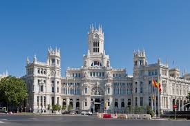

Madrid
- Name of the destination: Madrid 
- Country where it is located: Spain
Madrid, Spain's vibrant capital, is known for its rich history, stunning architecture, and lively atmosphere. Visit the Royal Palace, stroll through Retiro Park, or explore world-class art at the Prado Museum. Madrid’s tapas bars and flamenco shows offer a taste of its unique culture and energy.